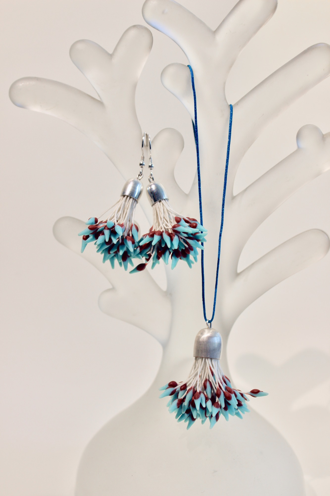
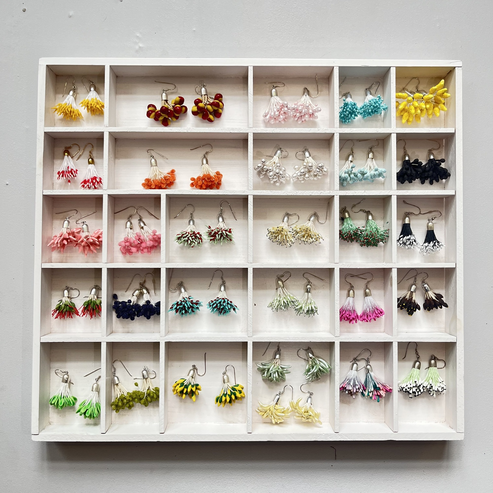
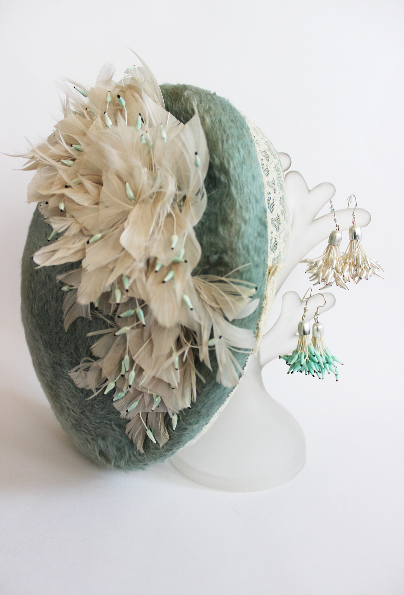
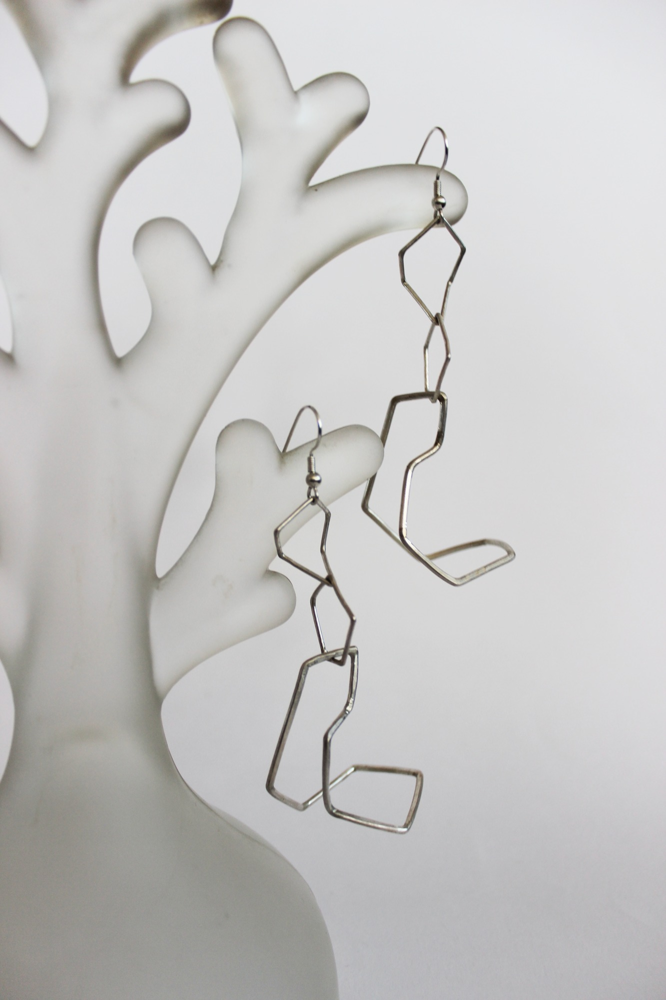
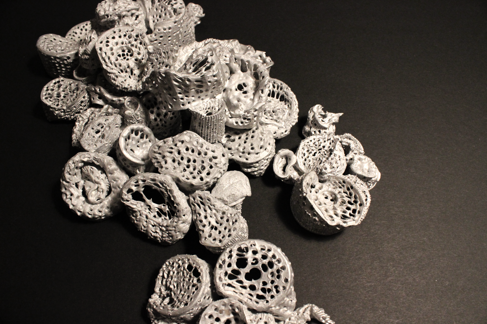
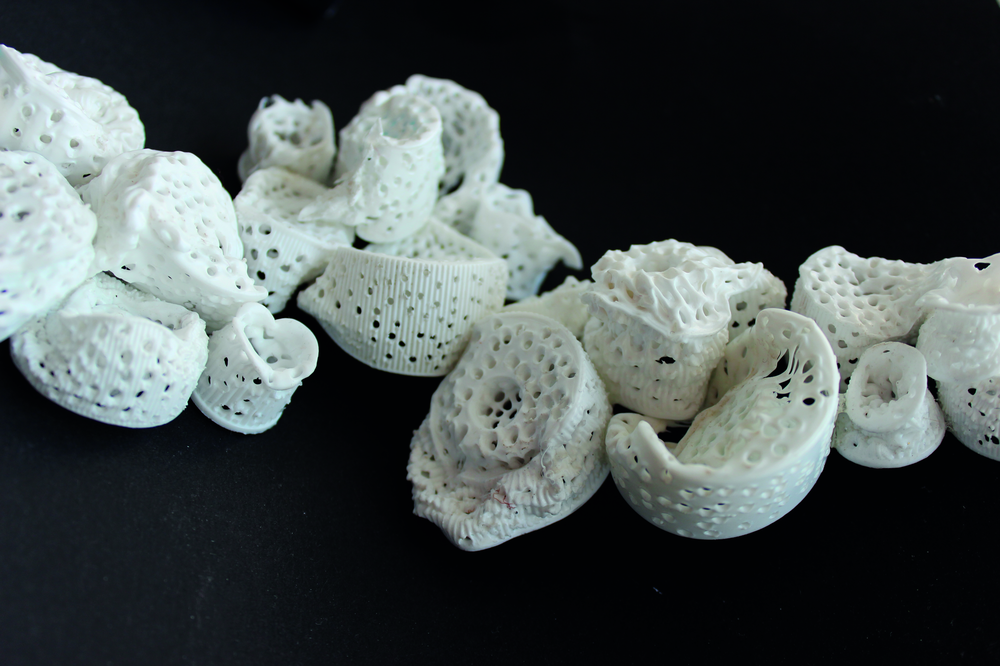
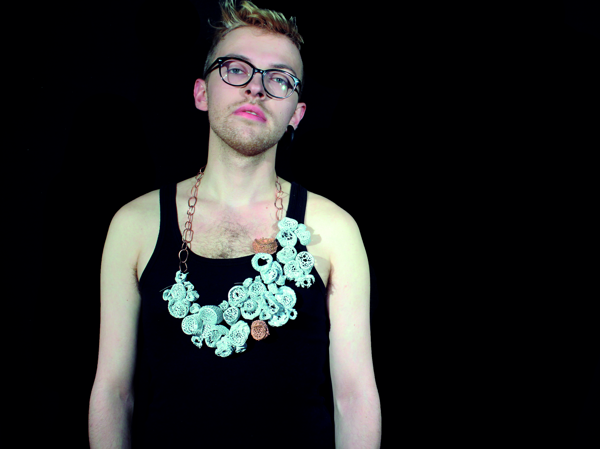
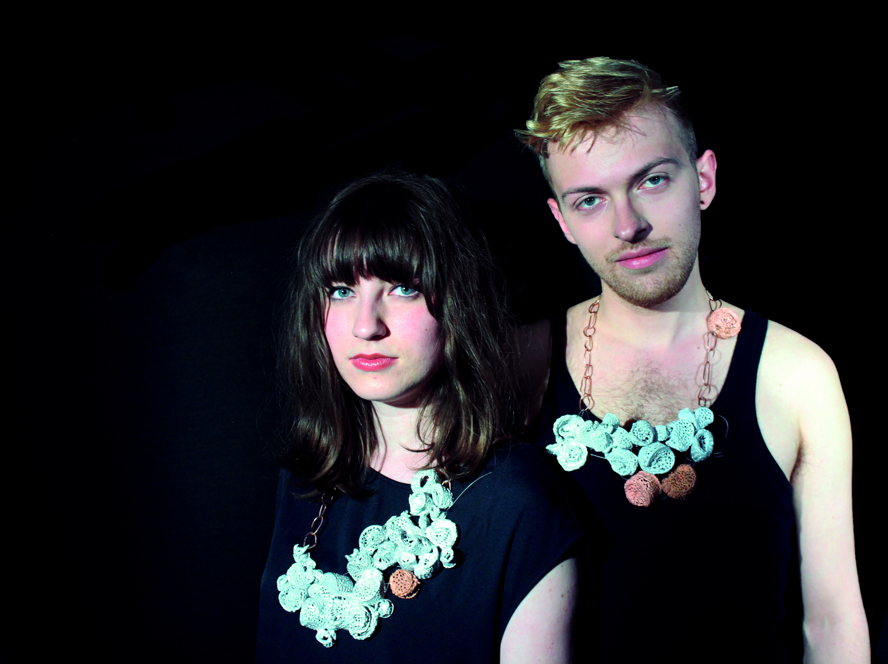
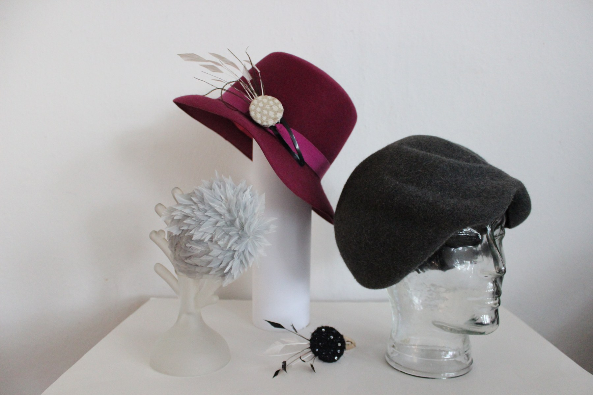

Ungewöhnliche Materialien.
Besondere Verbindungen.
Schmuck zwischen Kunst und Alltag.
Einzelstücke und kleine Serien von Geraldine Massing.
Blütenstempel
Vintage-Material · Ohrringe & Ketten


Einst für die Herstellung von Seidenblumen gedacht, finden diese Blütenstempel ein neues Leben als Ohrringe und Ketten. Die Vielfalt an Farben und Formen stammt zu einem großen Teil aus Vintage-Beständen, die heute so nicht mehr hergestellt werden. Daraus entstehen angenehm leichte Einzelstücke und kleine Serien.
Geometrical
Silber · Von Hand gebogen
Klare Linien, die in Bewegung kommen: Von Hand gebogene Silberglieder verbinden sich zu leichten Ohrringen, die bei jedem Schritt sanft mitschwingen. Jedes Paar ist ein Einzelstück.
Abgeschraubt
Alltagsmaterial · Colliers



Ein vertrautes Alltagsmaterial wird zu etwas Unerwartetem: Aus industriell gefertigten Zahnpastaverschlüssen entstehen organische Gebilde, die an Korallen erinnern. Durch Bearbeitung und Verfremdung erhalten die Verschlüsse neue Strukturen und Bedeutungen. Eine Serie von Colliers, die den Blick auf das Gewöhnliche verändert und Alternativen zu traditionellen Schmuckmaterialien eröffnet.
Hutschmuck
Form · Material · Persönlichkeit
Schmuck, der seinen Platz auf dem Kopf findet. Diese Arbeiten verbinden meine Beschäftigung mit Schmuck und meine Ausbildung zur Hutmacherin.
Ich bin Geraldine.
Mich interessiert das Besondere im Alltäglichen – und das, was ein Material noch werden kann.
Seit 2018 arbeite ich als freischaffende Künstlerin in den Bereichen Bühnenbild, Kostümbild, Schmuck und Installation. Meine Schmuckstücke fertige ich von Hand: als Einzelstücke oder in kleinen Serien. Dabei begegnen sich Silber, Stoff, Zahnpastaverschlüsse und Vintage Blütenstempel – Materialien, die ich aus ihrem gewohnten Zusammenhang löse und neu zusammensetze.
Mein Weg führte mich von der Modisterei an der Modeschule Hetzendorf über das Schmuckdesign-Kolleg in der Herbststraße zum Bühnenbildstudium an der Akademie der bildenden Künste Wien bei Anna Viebrock und an die University of the Arts London, Central Saint Martins. Eigene Bühnen- und Kostümbilder entstanden unter anderem für das Salzburger Landestheater, das Musiktheater im Revier und das Volkstheater Wien.
Du hast einen Farbwunsch oder eine Idee für eine besondere Anfertigung? Ich freue mich, von dir zu hören.
Schreib mir ↗